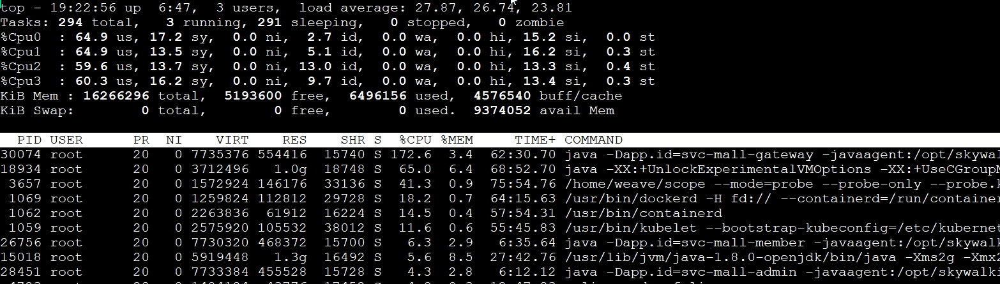

- 00 开篇词 打破四大认知局限，进阶高级性能工程师.md.html
- 01 性能工程：为什么很多性能测试人员无法对性能结果负责？.md.html
- 02 关键概念：性能指标和场景的确定.md.html
- 03 核心分析逻辑：所有的性能分析，靠这七步都能搞定.md.html
- 04 如何构建性能分析决策树和查找瓶颈证据链？.md.html
- 05 性能方案：你的方案是否还停留在形式上？.md.html
- 06 如何抽取出符合真实业务场景的业务模型？.md.html
- 07 性能场景的数据到底应该做成什么样子？.md.html
- 08 并发、在线和TPS到底是什么关系？.md.html
- 09 如何设计全局和定向监控策略？.md.html
- 10 设计基准场景需要注意哪些关键点？.md.html
- 11 打开首页之一：一个案例，带你搞懂基础硬件设施的性能问题.md.html
- 12 打开首页之二：如何平衡利用硬件资源？.md.html
- 13 用户登录：怎么判断线程中的Block原因？.md.html
- 14 用户信息查询：如何解决网络软中断瓶颈问题？.md.html
- 15 查询商品：资源不足有哪些性能表现？.md.html
- 16 商品加入购物车：SQL优化和压力工具中的参数分析.md.html
- 17 查询购物车：为什么铺底参数一定要符合真实业务特性？.md.html
- 18 购物车信息确定订单：为什么动态参数化逻辑非常重要？.md.html
- 19 生成订单信息之一：应用JDBC池优化和内存溢出分析.md.html
- 20 生成订单信息之二：业务逻辑复杂，怎么做性能优化？.md.html
- 21 支付前查询订单列表：如何分析优化一个固定的技术组件？.md.html
- 22 支付订单信息：如何高效解决for循环产生的内存溢出？.md.html
- 23 决定容量场景成败的关键因素有哪些？.md.html
- 24 容量场景之一：索引优化和Kubernetes资源分配不均衡怎么办？.md.html
- 25 容量场景之二：缓存对性能会有什么样的影响？.md.html
- 26 稳定性场景之一：怎样搞定业务积累量产生的瓶颈问题？.md.html
- 27 稳定性场景之二：怎样搞定磁盘不足产生的瓶颈问题？.md.html
- 28 如何确定异常场景的范围和设计逻辑？.md.html
- 29 异常场景：如何模拟不同组件层级的异常？.md.html
- 30 如何确定生产系统配置？.md.html
- 31 怎么写出有价值的性能报告？.md.html
- 我们这个课程的系统是怎么搭建起来的？.md.html
- 结束语 做真正的性能项目.md.html
- 捐赠
12 打开首页之二：如何平衡利用硬件资源？
你好，我是高楼。
针对打开首页接口的性能问题，我们在上节课中确定了是Gateway在消耗响应时间，达到了近100毫秒。于是，我们开始定位Gateway上的响应时间消耗。
在第一阶段的时候，我们关注了应用所在的主机，同时还了解到，宿主机总共有四台机器；在第二阶段，我们查看了物理机的CPU模式。并尝试通过修改CPU运行模式来优化性能。可是，问题仍然没有解决，TPS没见提升，响应时间依旧很长。
今天这节课，我们进入第三阶段，继续分析其他的瓶颈点，比如wa cpu、资源均衡使用、网络带宽等问题。其中，在性能的分析逻辑里，资源均衡使用是一个非常容易被忽略，但又极为重要的方面。我们通常都盯着计数器给出的数值有什么异常，而不是考虑资源怎么做相应的调配。
在我们这个案例中，系统是用k8s来管理资源的，所以我们必须要关注资源的均衡使用，避免出现有些服务性能很差，却和性能好的服务分配同样资源的情况。另外，网络资源在k8s中会跨越好几层，我们也要着重关注一下。
在学习这节课时，我建议你多思考下资源的均衡使用问题。现在，我们就开始今天的课程。
定位gateway上的响应时间消耗
第三阶段：NFS服务器的wa cpu偏高
根据分析的逻辑，我们仍然是先看全局监控数据，思路依旧是“全局-定向”，这是我一贯的顺序了。
因此，我们现在再来查一下全局监控计数器，得到下面这样的视图：
[root@lenvo-nfs-server ~]# top
top - 00:12:28 up 32 days, 4:22, 3 users, load average: 9.89, 7.87, 4.71
Tasks: 217 total, 1 running, 216 sleeping, 0 stopped, 0 zombie
%Cpu0 : 0.0 us, 4.0 sy, 0.0 ni, 34.8 id, 61.2 wa, 0.0 hi, 0.0 si, 0.0 st
%Cpu1 : 0.0 us, 4.7 sy, 0.0 ni, 27.8 id, 67.6 wa, 0.0 hi, 0.0 si, 0.0 st
%Cpu2 : 0.0 us, 6.1 sy, 0.0 ni, 0.0 id, 93.9 wa, 0.0 hi, 0.0 si, 0.0 st
%Cpu3 : 0.0 us, 7.6 sy, 0.0 ni, 3.4 id, 82.8 wa, 0.0 hi, 6.2 si, 0.0 st
KiB Mem : 3589572 total, 82288 free, 775472 used, 2731812 buff/cache
KiB Swap: 8388604 total, 8036400 free, 352204 used. 2282192 avail Mem
可以看到，计数器wa的CPU使用率偏高，其中Cpu2的wa已经达到90%以上。我们知道，wa cpu是指CPU在读写的时候，所产生的IO等待时间占CPU时间的百分比。那么，它现在竟然这么高，是因为写操作有很多吗？
这时候我们就要关注下IO的状态了，因为IO慢绝对是一个性能问题。通过iostat命令，我们看到IO状态如下：
[root@lenvo-nfs-server ~]# iostat -x -d 1
Linux 3.10.0-693.el7.x86_64 (lenvo-nfs-server) 2020年12月26日 _x86_64_ (4 CPU)
..................
Device: rrqm/s wrqm/s r/s w/s rkB/s wkB/s avgrq-sz avgqu-sz await r_await w_await svctm %util
sda 0.00 0.00 94.00 39.00 13444.00 19968.00 502.44 108.43 410.80 52.00 1275.59 7.52 100.00
Device: rrqm/s wrqm/s r/s w/s rkB/s wkB/s avgrq-sz avgqu-sz await r_await w_await svctm %util
sda 0.00 18.00 137.00 173.00 17712.00 43056.00 392.05 129.46 601.10 38.80 1046.38 3.74 115.90
..................
你可以看到，IO使用率达到了100%，说明IO的过程实在是太慢了。
接下来，我们再查查Block Size是多少，算一下当前IO到底是随机读写还是顺序读写。虽然大部分操作系统都默认Block Size是4096，但是，本着不出小错的原则，我们还是查一下比较放心。
我们先确定磁盘的格式是什么：
[root@lenvo-nfs-server ~]# cat /proc/mounts
...................
/dev/sda5 / xfs rw,relatime,attr2,inode64,noquota 0 0
...................
[root@lenvo-nfs-server ~]#
通过上述命令可以知道，这个磁盘是XFS格式。那我们就用下面这个命令来查看Block Size：
[root@lenvo-nfs-server ~]# xfs_info /dev/sda5
meta-data=/dev/sda5 isize=512 agcount=4, agsize=18991936 blks
= sectsz=512 attr=2, projid32bit=1
= crc=1 finobt=0 spinodes=0
data = bsize=4096 blocks=75967744, imaxpct=25
= sunit=0 swidth=0 blks
naming =version 2 bsize=4096 ascii-ci=0 ftype=1
log =internal bsize=4096 blocks=37093, version=2
= sectsz=512 sunit=0 blks, lazy-count=1
realtime =none extsz=4096 blocks=0, rtextents=0
[root@lenvo-nfs-server ~]#
结果显示，Block Size是4096。同时，我们也可以看到读写基本上都是顺序的，不是随机。
那我们就来计算一条数据，确认一下顺序写的能力。如果全部是随机写，那么：
\(次数=（43056\\times 1024）\\div 4096=10,764次\)
但是，实际上写只有173次，所以确实是顺序写了。
问题又来了，一次写多少个Block呢？
\(（43056\\times1024）\\div173\\div4096\\approx 62个\)
我们得出，一次写62个Block。从这样的数据来看，说明顺序写的能力还是不错的。因为对普通磁盘来说，应用在读写的时候，如果是随机写多，那写的速度就会明显比较慢；如果顺序写多，那么写的速度就可以快起来。
你发现了吗？虽然当前磁盘的顺序写能力不错，但是等待的时间也明显比较多。所以，接下来，我们得查一下是什么程序写的。这里我们用iotop命令查看：
Total DISK READ : 20.30 M/s | Total DISK WRITE : 24.95 M/s
Actual DISK READ: 20.30 M/s | Actual DISK WRITE: 8.27 M/s
TID PRIO USER DISK READ DISK WRITE SWAPIN IO> COMMAND
12180 be/4 root 2.39 M/s 16.01 M/s 0.00 % 35.94 % [nfsd]
12176 be/4 root 3.20 M/s 0.00 B/s 0.00 % 32.25 % [nfsd]
12179 be/4 root 3.03 M/s 6.43 M/s 0.00 % 32.23 % [nfsd]
12177 be/4 root 2.44 M/s 625.49 K/s 0.00 % 31.64 % [nfsd]
12178 be/4 root 2.34 M/s 1473.47 K/s 0.00 % 30.43 % [nfsd]
12174 be/4 root 2.14 M/s 72.84 K/s 0.00 % 29.90 % [nfsd]
12173 be/4 root 2.91 M/s 121.93 K/s 0.00 % 24.95 % [nfsd]
12175 be/4 root 1894.69 K/s 27.71 K/s 0.00 % 24.94 % [nfsd]
...............
可以看到，IO都是NFS写过来的。那NFS的流量又是从哪里来的呢？从下面的数据来看，这些流量是从各个挂载了NFS盘的机器写过来的，这是我们一开始部署应用的时候，考虑统一使用NFS来做IO的思路。因为这个机器挂载了一个大容量的磁盘，为了保证磁盘够用，就把多个主机挂载了NFS盘。
191Mb 381Mb 572Mb 763Mb 954Mb
mqqqqqqqqqqqqqqqqqqqvqqqqqqqqqqqqqqqqqqqvqqqqqqqqqqqqqqqqqqqvqqqqqqqqqqqqqqqqqqqvqqqqqqqqqqqqqqqqqqq
172.16.106.119:nfs => 172.16.106.130:multiling-http 1.64Mb 2.04Mb 3.06Mb
<= 26.2Mb 14.5Mb 19.8Mb
172.16.106.119:nfs => 172.16.106.100:apex-mesh 1.43Mb 2.18Mb 3.79Mb
<= 25.5Mb 14.2Mb 14.4Mb
172.16.106.119:nfs => 172.16.106.195:vatp 356Kb 1.27Mb 1.35Mb
<= 9.71Mb 7.04Mb 7.41Mb
172.16.106.119:nfs => 172.16.106.56:815 7.83Kb 4.97Kb 4.81Kb
<= 302Kb 314Kb 186Kb
172.16.106.119:nfs => 172.16.106.79:device 11.0Kb 7.45Kb 7.57Kb
<= 12.4Kb 22.0Kb 28.5Kb
172.16.106.119:ssh => 172.16.100.201:cnrprotocol 2.86Kb 2.87Kb 5.81Kb
<= 184b 184b 525b
169.254.3.2:60010 => 225.4.0.2:59004 2.25Kb 2.40Kb 2.34Kb
<= 0b 0b 0b
169.254.6.2:60172 => 225.4.0.2:59004 2.25Kb 2.40Kb 2.34Kb
<= 0b 0b 0b
172.16.106.119:nfs => 172.16.106.149:986 0b 1.03Kb 976b
<= 0b 1.26Kb 1.11Kb
qqqqqqqqqqqqqqqqqqqqqqqqqqqqqqqqqqqqqqqqqqqqqqqqqqqqqqqqqqqqqqqqqqqqqqqqqqqqqqqqqqqqqqqqqqqqqqqqqqqq
TX: cum: 37.0MB peak: 31.9Mb rates: 3.44Mb 5.50Mb 8.22Mb
RX: 188MB 106Mb 61.8Mb 36.2Mb 41.8Mb
TOTAL: 225MB 111Mb 65.2Mb 41.7Mb 50.1Mb
我们在Total DISK WRITE和Total DISK READ 中可以看到，读写能力才达到 20M。没办法，既然wa这个机器的能力不怎么好，那就只有放弃统一写的思路。不过，为了不让机器的IO能力差成为应用的瓶颈点，我们还是再尝试一下这两个动作：
- 第一，把MySQL的数据文件移走；
- 第二，把Log移走。
接着我们执行场景，希望结果能好。
可是，在我查看了TPS和RT曲线后，很遗憾地发现，结果并没有改善。TPS依然很低并且动荡非常大：
看来我们的努力并没有什么效果，悲剧！就这样，命运让我们不得不来到第四个阶段。
第四阶段：硬件资源耗尽，但TPS仍然很低
这个阶段我们查什么呢？仍然是全局监控的数据。我们来看一下所有主机的Overview资源：
从上图中可以看到，虚拟机k8s-worker-8的CPU使用率已经很高了，达到了95.95%。那我们就登录到这台虚拟机上，看看更详细的全局监控数据：

因为CPU不超分了，所以我们可以很明显地看到，k8s-worker-8中的CPU被耗尽。从进程上来看，CPU是被我们当前正在测试的接口服务消耗的。并且在这台虚拟机上，不止有Portal这一个进程，还有很多其他的服务。
那我们就把Portal服务调度到一个不忙的worker上去，比如移到worker-3（6C16G）上:
得到如下结果：
我们看到，TPS已经有所上升了，达到了近300，性能确实变好了一些。但是，这个数据还不如我们一开始不优化的结果，毕竟一开始还能达到300TPS呢。那我们就接着分析当前的瓶颈在哪里。
我们先来看一下主机的性能数据：
其中，worker-8的CPU使用率达到了90.12%。为什么这个CPU还是如此之高呢？我们继续来top一下，看看worker-8的性能数据：

你看，在process table中，排在最上面的是Gateway服务，说明是Gateway进程消耗的CPU最多。既然如此，我们自然要看看这个进程中的线程是不是都在干活。

我们看到上图中全是绿色的，也就是说Gateway中的线程一直处于Runnable状态，看来工作线程确实挺忙的了。而在前面的worker-8性能数据中，si cpu已经达到了16%左右。所以结合这一点，我们来看一下实时的软中断数据：

可以看到网络软中断一直在往上跳，这说明确实是网络软中断导致si cpu变高的。网络软中断的变化是我们根据证据链找下来的。证据链如下：

我们再看一下网络带宽有多大：
可以看到，网络带宽倒是不大。
从上述Gateway的工作线程、软中断数据和网络带宽情况来看，Gateway只负责转发，并没有什么业务逻辑，也没有什么限制。所以，针对TPS上不去的原因，似乎除了网络转发能力比较差之外，我们再找不到其他解释了。
这个思路其实是需要一些背景知识的，因为我们通常用网络带宽来判断网络是不是够用，但是这是不够的。你要知道，在网络中当小包过多的时候，网络带宽是难以达到线性流量的。所以，我们这里的网络带宽即便不会很高，也会导致网络软中断的增加和队列的出现。
既然如此，那我们就把这个Gateway也从worker-8移到worker-2（6C16G）上去，做这一步是为了减少网络软中断的争用。我们再看一下集群的整体性能：
看起来不错哦，worker-8 的 CPU 使用率降到了 56.65%，同时worker-3 的 CPU 使用率升到了 70.78%。不过网络带宽有几个地方变红了，这个我们后面再分析。至少我们从这里看到，压力是起来了。
我们回来看一下压力的情况：

TPS已经达到1000左右了！棒棒的，有没有！我们画一个TPS对比图庆祝一下：

其实到这里，打开首页这个接口的基准场景就可以结束了，因为我们已经优化到了比需求还要高的程度。只是从技术角度来说，一个系统优化到最后是会有上限的，所以，我们仍然需要知道这个上限在哪里。
第五阶段：硬件资源还是要用完
现在压力把worker-3的CPU资源用得最高，用到了70.78%。那么，下面我们就要把这个机器的硬件资源给用完，因为只有将资源都用尽，我们才能判断系统容量的最上限。这也就是我一直强调的，要将性能优化分为两个阶段：一是把资源用起来；二是把容量调上去。就算不是CPU资源，把其他的资源用完也可以。
既然这时候压力已经把worker-3的CPU资源用到了70.78%，那我们就到这个应用中看一下线程把CPU用得怎么样。
你看，这里面的线程确实都忙起来了。
既然如此，那我们把Tomcat和JDBC连接的最大值都改到80，再来看一下TPS的表现（请你注意，这里只是一个尝试，所以改大即可，并没有什么道理。在后续的测试过程中，我们还要根据实际情况来做调整，就是不能让线程太大，也不能不够用）。
为了让压力能直接压到一个节点上，我们跳过Ingress，用分段的测法直接把压力发到服务上。然后，我们去Pod里设置一个node port把服务代理出来，再修改一下压力脚本。得到结果如下：
TPS还是抖动大。那我们接着看全局监控：
看上图就可以知道，有几个主机的带宽都飘红了，而其他的资源使用率并没有特别高。前面我们有说过，分析网络问题，不应该只看网络带宽，还要分析其他的内容，下面我们就得分析一下网络带宽。
我们到监控工具中看一下网络的流量，你可以看到确实有一些非被测应用在占用带宽，并且占得还不小：
我们再看总体带宽，发现已经用了4G多：
为了弄清楚那些与被测系统无关的应用，会对带宽消耗产生影响进而影响TPS，我们现在先把影响带宽的应用都删除了，比如Weave Scope、Monitoring的监控工具等，从列表中来看这些应用占了不小的带宽。
然后我们再次测试，发现TPS有所上升，关键是稳定了很多：

我们可以看到，TPS已经上升到了1200左右，可见带宽对TPS还是造成了不小的影响。
接着，我们查一下网络的队列，发现应用所在的服务器上面已经出现了不小的 Recv_Q。
Proto Recv-Q Send-Q Local Address Foreign Address State PID/Program name Timer
tcp 759 0 10.100.69.229:8085 10.100.140.32:35444 ESTABLISHED 1/java off (0.00/0/0)
tcp 832 0 10.100.69.229:34982 10.96.224.111:3306 ESTABLISHED 1/java keepalive (4871.85/0/0)
tcp 1056 0 10.100.69.229:34766 10.96.224.111:3306 ESTABLISHED 1/java keepalive (4789.93/0/0)
tcp 832 0 10.100.69.229:35014 10.96.224.111:3306 ESTABLISHED 1/java keepalive (4888.23/0/0)
tcp 3408 0 10.100.69.229:34912 10.96.224.111:3306 ESTABLISHED 1/java keepalive (4855.46/0/0)
tcp 3408 0 10.100.69.229:35386 10.96.224.111:3306 ESTABLISHED 1/java keepalive (5019.30/0/0)
tcp 3392 0 10.100.69.229:33878 10.96.224.111:3306 ESTABLISHED 1/java keepalive (4495.01/0/0)
tcp 560 0 10.100.69.229:35048 10.96.224.111:3306 ESTABLISHED 1/java keepalive (4888.23/0/0)
tcp 1664 0 10.100.69.229:34938 10.96.224.111:3306 ESTABLISHED 1/java keepalive (4855.46/0/0)
tcp 759 0 10.100.69.229:8085 10.100.140.32:35500 ESTABLISHED 1/java off (0.00/0/0)
tcp 832 0 10.100.69.229:35114 10.96.224.111:3306 ESTABLISHED 1/java keepalive (4921.00/0/0)
tcp 1056 0 10.100.69.229:34840 10.96.224.111:3306 ESTABLISHED 1/java keepalive (4822.69/0/0)
tcp 1056 0 10.100.69.229:35670 10.96.224.111:3306 ESTABLISHED 1/java keepalive (5117.60/0/0)
tcp 1664 0 10.100.69.229:34630 10.96.224.111:3306 ESTABLISHED 1/java keepalive (4757.16/0/0)
从这里来看，网络已经成为了下一个瓶颈（关于这一点，我们在后续的课程里会讲）。
如果你想接着调优，还可以从应用代码下手，让应用处理得更快。不过，对于基准测试来说，一个没有走任何缓存的接口，在一个6C16G的单节点虚拟机上能达到这么高的TPS，我觉得差不多了。
接下来，我们还要去折腾其他的接口，所以，我们对这个接口的优化到这里就结束了。

总结
在打开首页这个接口的基准场景中，涉及到了很多方面的内容。从一开始的信息整理，比如访问路径、查看代码逻辑、场景试运行等，都是在为后面的分析做准备。
而当我们看到响应时间高，然后做拆分时间这一步，就是我一直在RESAR性能工程中强调的“分析的起点”。因为在此之前，我们用的都是压力工具上的数据，只是把它们罗列出来就好了，没有任何分析的部分。
对于拆分时间，我们能用的手段有多种，你可以用你喜欢的方式，像日志、APM工具，甚至抓包都是可以的。拆分了时间之后，我们就要分析在某个节点上响应时间高的时候，要怎么做。这时就用到了我一直强调的“全局-定向”监控分析思路。
在每一个阶段，你一定要清楚地定义优化的方向和目标，否则容易迷失方向。特别是对于一些喜欢把鼠标操作得特别快的同学，容易失去焦点，我劝你慢点操作，想清楚下一步再动。
而我们上述整个过程，都依赖于我说的性能分析决策树。从树顶往下，一层层找下去，不慌不乱，不急不燥。
只要你想，就能做到。
课后作业
最后，我给你留三个思考题。
当st cpu高的时候，你要去看什么？
当wa cpu高的时候，你要去看什么？
为什么我们要把硬件资源用完？
记得在留言区和我讨论、交流你的想法，每一次思考都会让你更进一步。
如果你读完这篇文章有所收获，也欢迎你分享给你的朋友，共同学习进步。我们下一讲再见！
© 2019 - 2023 Liangliang Lee. Powered by gin and hexo-theme-book.